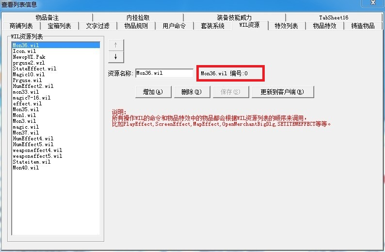

格式: OPENMERCHANTBIGDLGWIL文件序号图片序号是否可以移动(0,1)显示位置(0=左上角,1=右上角,2=左下角,3=右下角,4=居中) 微调坐标X 微调坐标Y 是否显示关闭按钮(0,1)关闭按钮坐标X关闭按钮坐标Y窗口是否独立存在(0或为空不独立存在，1独立存在，独立存在的意思就是普通的NPC对话框和自定义大窗口NPC对话框可以同时显示，正常情况下是只能显示一个NPC对话框的，要么是普通的，要么是自定义大对话框)
例：
[@main]
#ACT
OPENMERCHANTBIGDLG 3 607 0 1 1 1 1
;根据下图中的WIL序号，3表示的是prguse2.wzl，WIL序号的计算是从0开始的,从0开始数prguse2.wzl在第三位,
;如果要调用其他素材，如果WIL资料里没有，可以先添加WIL文件到WIL资源列表，然后修改脚本的WIL文件序号，就可以调用对应的文件。
;这个脚本调用的是prguse2.wzl素材里的607这个素材，为NPC的对话框
什么是WIL文件序号？
具体可以在，M2-查看-列表信息二
关闭自定义NPC对话框
CloseBigDialogBox
